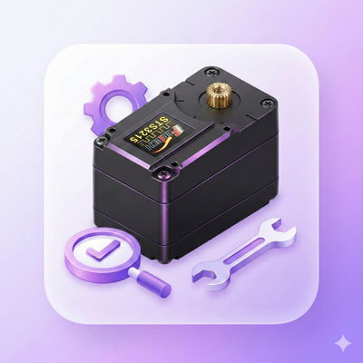

Programs
로보시지에서 제공하는 프로그램을 다운로드하세요

Motor Test & ID Setup
Feetech STS3215
단일 모터 & SO-ARM 101 테스트 GUI

Keyboard Teleop GUI
SO-ARM 101
키보드 원격 조작 GUI

End-Effector Teleop GUI
SO-ARM 101
엔드이펙터 키보드 제어 GUI